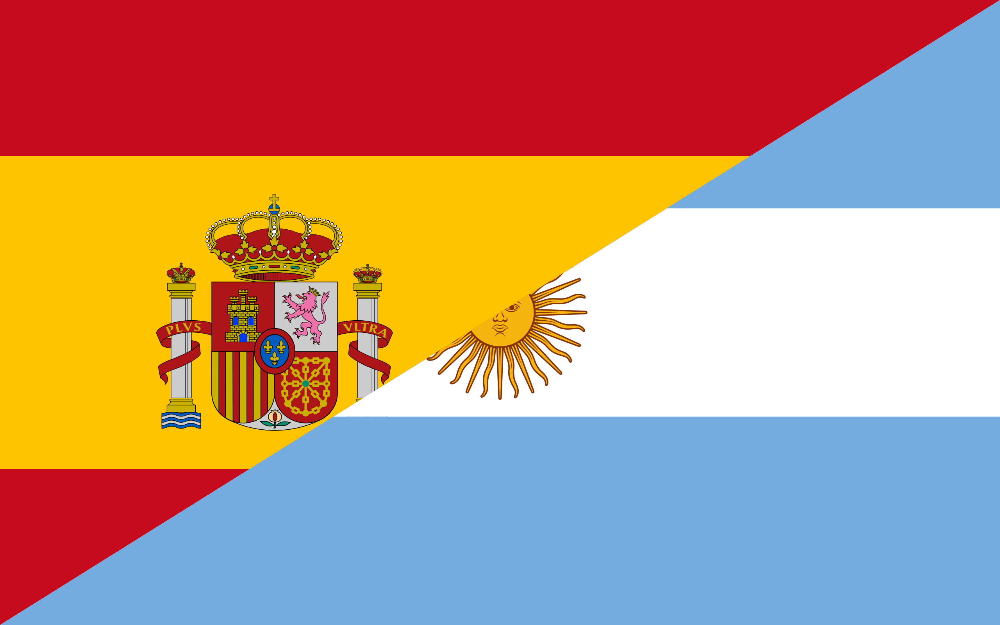

Las elecciones europeas y el nuevo viaje de Milei a Madrid enrarecen el vínculo entre la Argentina y España

La inesperada crisis diplomática entre la Argentina y España apenas comienza. Aún resta pasar por el tamiz de las elecciones legislativas europeas del 9 de junio y el proyectado nuevo viaje de Javier Milei a Madrid el 21 de ese mes para recibir un premio del Instituto Juan de Mariana.
Para las elecciones faltan más de dos semanas. En tanto, para la planificada visita no oficial del presidente a España, todo un mes. La “anécdota” diplomática, como la calificó la canciller Diana Mondino, está generando una usina de especulaciones sobre una eventual prohibición por parte del gobierno de Pedro Sánchez al nuevo viaje de Milei, a un paso del comienzo de la campaña electoral europea donde se prevé un avance claro de la derecha.
El presidente argentino se encargó de avivar el fuego, una vez más, con un mensaje en X: “Veremos hasta dónde llega el totalitarismo en sangre... Aviso, yo viajaré a recibir el Premio Juan de Mariana. Veremos si su gran complejo de inferioridad le permite que los liberales españoles puedan galardonarme en persona. VLLC”, escribió.
La discusión política entre Argentina y España parece que no va a terminar muy pronto. ¿Quién crees que la ganará?
 Volver a inicio